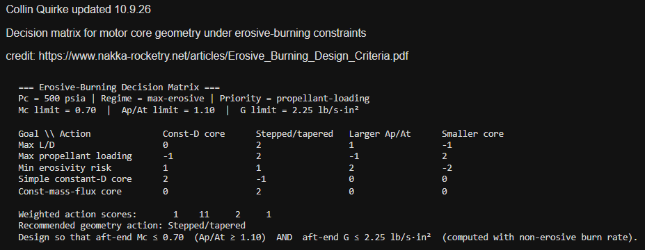
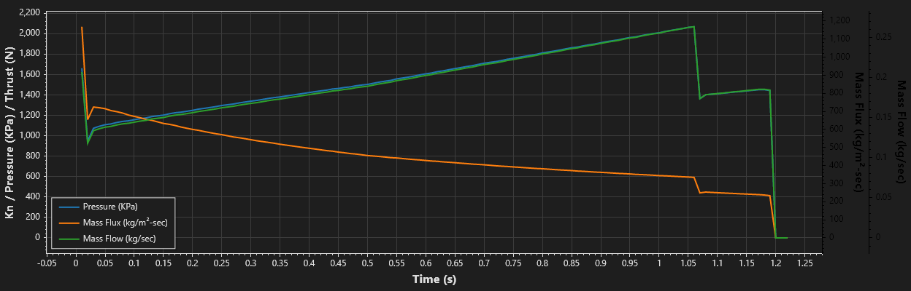
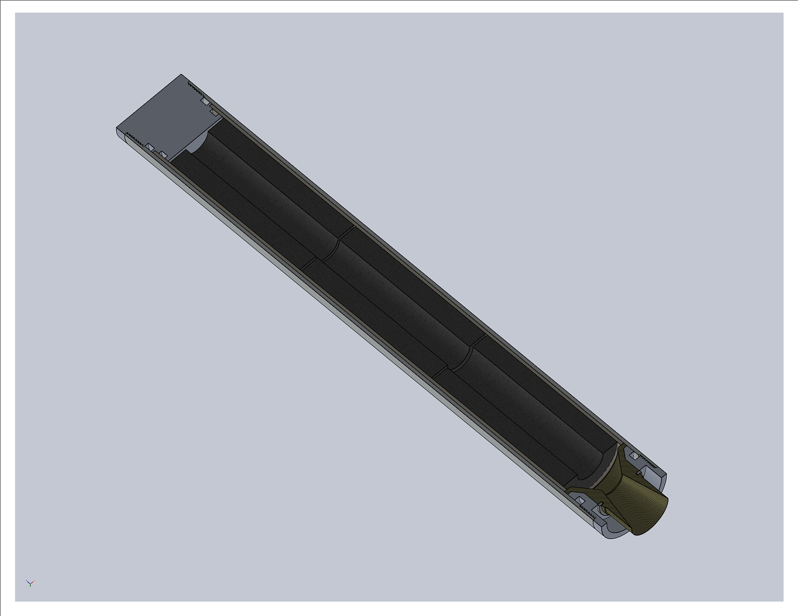
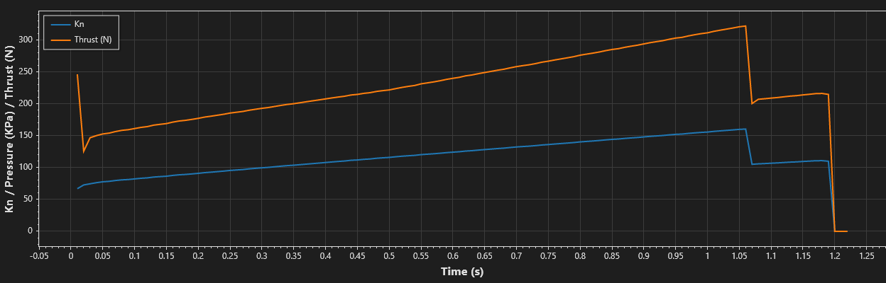
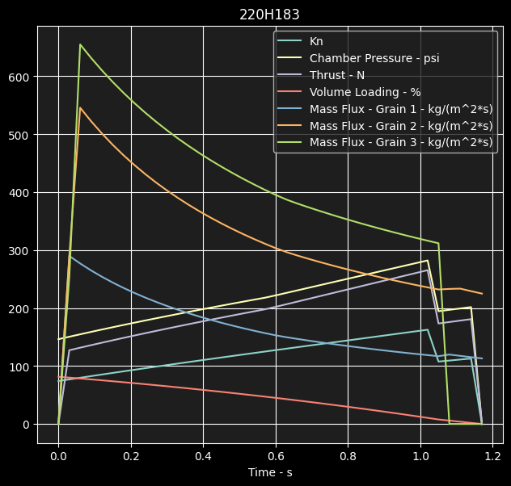

SRAD H-Class Solid Rocket Motor
38mm RNX-71 — Design Through Manufacturing
Overview
This was Liberty Rocketry's first attempt at a fully student-researched-and-developed motor. I led the project end-to-end (design, analysis, and the start of manufacturing) before it was paused by the university. Development continues independently.
Why RNX-71
As a first SRAD engine, minimizing risk while proving out the full design-to-manufacture pipeline mattered more than performance. RNX-71 is inexpensive, low-power, and low-consequence, making it well suited for validating process and procedure, including navigating the university's safety approval, before scaling up.
Process
Starting from the target scope (38mm, H-class, 500 psi chamber pressure), I worked outward:
1. From performance goals and propellant characteristics, the team calculated rough geometries and motor characteristics.
2. I created a decision matrix in MATLAB based on step 1.
3. I worked with a peer to finalize propellant composition and the necessary thermodynamic and burn-rate properties.
4. I built a target model, then modeled it in BurnSim 4.0 and compared it against OpenMotor.
5. I modeled the design in SolidWorks, applied GD&T to the fitment, and 3D-printed the assembly to verify it.
6. I finalized the manufacturing plan, drawings, and necessary equipment. I purchased items while keeping motor components under $80.
7. I started manufacturing.
Motor Characteristics
Hand calculations were performed for the design, along with a decision matrix, shown below. Our parameters were as follows:
- Mass flux less than 1200 kg/m^2-sec
- Minimum port-to-throat ratio = 1.1
- Chamber port Mach number less than 0.7
Additionally, the plot shown illustrates the balance between pressure, mass flux, and mass flow rate.


Hardware
I designed a two-part nozzle: an aluminum carrier with a phenolic insert retained by a thread design, with the insert retained by a snap ring. A single O-ring is used on the aft closure for hot gases. The phenolic insert is designed with a lip over the carrier to protect it against hot gases and allow a two-piece nozzle.
The forward closure is made of 6061 aluminum, with a phenolic disk protecting it during combustion. It is designed with two O-rings: one that seals gases from going behind the nozzle liner and another for redundancy.
The insulation liner is an off-the-shelf phenolic liner from Aerotech, chosen for simplicity and trade-off advantages.
Materials were chosen based on their physical characteristics and considered for ease of manufacturing. Although graphite is typical, it was not chosen due to manufacturing cost. Factors that allowed us to make this decision included the conservative chamber pressure and the design of the phenolic insert for single use.

Motor Performance
The final design led to:
- Impulse = 274 N-s (this is 71% of the H-class)
- Specific impulse = 121 s
- Burn time = 1.19 s
- Average thrust = 230 N (peak = 321.8 N)
Considerations: Given solid rocket motors of comparable size and high-power propellant, this is a very well-performing engine. The goal was to model the best performance for the given restrictions: 500 psi and G less than or equal to 1.8.
Comparison: BurnSim 4.0 and OpenMotor
More weight was given to the results from BurnSim because its physics solver is more accurate and refined. Additionally, BurnSim allows more variability in timestep and erosive burning. The Lenoir-Robillard erosive-burn model was used for this motor because of its accuracy with low-power, small motors. OpenMotor was used to confirm results and assess sensitivity.


Status
The design was modeled in BurnSim and cross-compared with OpenMotor.
I am currently analyzing thermal stresses and modeling fluid dynamics in ANSYS. Next: submit the purchase order.